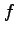
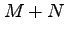

Once Maple is started, it awaits an input after the prompt . Every statement has to be terminated by ; (or : if you would like to suppress printing the output).
5^2+2*3-1; # 30
The symbol # is used by Maple to indicate a comment, and any text following it is disregarded when executing the line.
All objects have a type, however, unlike some other systems (such as Singular), Maple keeps track of types internally (there is an exception when one uses Maple's programming language; we will see this later on). This might create some confusion when different types interact (and it does), but in general, Maple's type conversion decisions are pretty good.
An assignment is done with the symbol , while comparison is accomplished by using the symbols or along with the function evalb (again, this will change slightly when programming).
text := "Hello World!": print(text); evalb( text = "Hello World!" ); num1 := 42.000: num2 := 42: evalb( num1 <> num2 ); convert(num1 + num2,string); # "Hello World!" # true # false # "84.000"
The last displayed result is always available with the symbol (second to last with and so on). This is particularly useful if you are doing an long interactive computation and you forgot to store the result in a variable.
z3 := 3:
f := (x-z1)*(x-z2)*(x-z3);
eval( f,{x=z1} );
eval( f,{z1=t,z2=2} );
eval( %,{x=4});
g := expand(%%);
sort(collect(g,x),x);
# f := (x - z1) (x - z2) (x - 3)
# 0
# (x - t) (x - 2) (x - 3)
# 8 - 2t
# g := x^3 - 5 x^2 + 6 x - t x^2 + 5 t x - 6 t
# x^3 + (-t - 5) x^2 + (5 t + 6) x - 6 t
The previous example shows many Maple features which are worth describing. The first line defines a variable to be the integer (and suppresses the output). Next, a polynomial expression in the variables , and is defined using the variable . Notice that Maple understands that has already been assigned, and thus it replaces each instance of with this value. Unlike Singular, Maple needs no ring declarations; you can bring any variables you choose into the worksheet at any time.
In the next line, the function is eval is used to take an expression and evaluate it upon substitution
of variables with other expressions (possibly involving other variables). In this case,
we see that evaluates to 0 when  . It is important to realize that the function eval
does not change in any way, which gives us its versatility. The command expand takes
an expression and returns its most, well, expanded form. Finally, we have used the two functions
collect and sort to visualize the polynomial
. It is important to realize that the function eval
does not change in any way, which gives us its versatility. The command expand takes
an expression and returns its most, well, expanded form. Finally, we have used the two functions
collect and sort to visualize the polynomial  as an expression in
as an expression in  with
the coefficients (in ) collected.
with
the coefficients (in ) collected.
We should remark that this last line could also have been generated by making a call to the useful function coeff:
coeff(g,x,3)*x^3 + coeff(g,x,2)*x^2 + coeff(g,x,1)*x + coeff(g,x,0); # x^3 + (-t - 5) x^2 + (5 t + 6) x - 6 t
The best way to learn Maple is to read the online documentation either through Maple's web site or through the many tutorials on the web. Within the program, you can access help by preceding a key word with the symbol ?. For instance, to learn more about the function coeff, we would type:
?coeff # coeff(p, x) # coeff(p, x, n) # coeff(p, x^n) # # Parameters # p - polynomial in x # x - variable (an expression) # n - (optional) an integer # # Description # -The coeff function extracts the coefficient of x^n in the polynomial p. .........
Maple provides some useful built-in data structures such as arrays and matrices. To work with matrices as algebraic objects, however, one must include the linear algebra library by typing the following command. Its output should contain the list of functions within the library.
with(linalg);
We begin by defining an array. One way is the following.
n := 5: arr := array(1..n): arr[3] := "3rd": print(arr); # [arr[1], arr[2], "3rd", arr[4], arr[5]]
In the case of matrices, we might create a matrix in two ways as follows.
M := matrix(3,3,[1,2,3,4,5,6,7,8,9]): N := [[1,2,3],[4,5,6],[7,8,9]]: evalb( M = N ); M[1,2] := 0: evalm(M); trace(M); det(M); evalm(det(M)*inverse(M)); # false # [ 1 0 3 ] # M := [ 4 5 6 ] # [ 7 8 9 ] # 15 # -12 # [ -3 24 -15 ] # [ 6 -12 6 ] # [ -3 -8 5 ]
This last example reveals that one must be careful when dealing with matrices and equality in Maple. In general, you might need to use the function evalm to convert a matrix from its data structure representation to its algebraic object (for instance, to evaluate  as a matrix, one would type evalm(M+N)).
Yet another way to make a matrix (or array) is with a loop.
P := matrix(3,3):
for i from 0 to 2 do
for j from 1 to 3 do
P[i+1,j] := 3*i+j;
end;
end;
evalm(P);
# creates the same matrix as M
To format the output of your worksheet, the command print is useful. Below, the concatenation operator is used to combine objects into one string.
print("The number n has value " || n);
# "The number n has value 5"
You can plot curves and surfaces in Maple with the plot command. Before getting to more technical stuff, let's create the pictures from the first chapter of the notes at www.math.tamu.edu/~sottile/conferences/Summer_IMA07/Sottile.pdf.
with(plots):
# plane curves
p := y^2-x^3-x^2:
implicitplot(p,x=-2..2,y=-2..2);
implicitplot(p+1/20,x=-2..2,y=-2..2);
implicitplot(p-1/20,x=-2..2,y=-2..2);
# hyperboloids
hp := x*y+z;
hos := x^2-x+y^2+y*z;
implicitplot3d(hp,x=-2..2,y=-2..2,z=-2..2);
implicitplot3d(hos,x=-2..2,y=-2..2,z=-2..2);
solve({hos,hp},{x,y,z}); # finds intersection parametrically